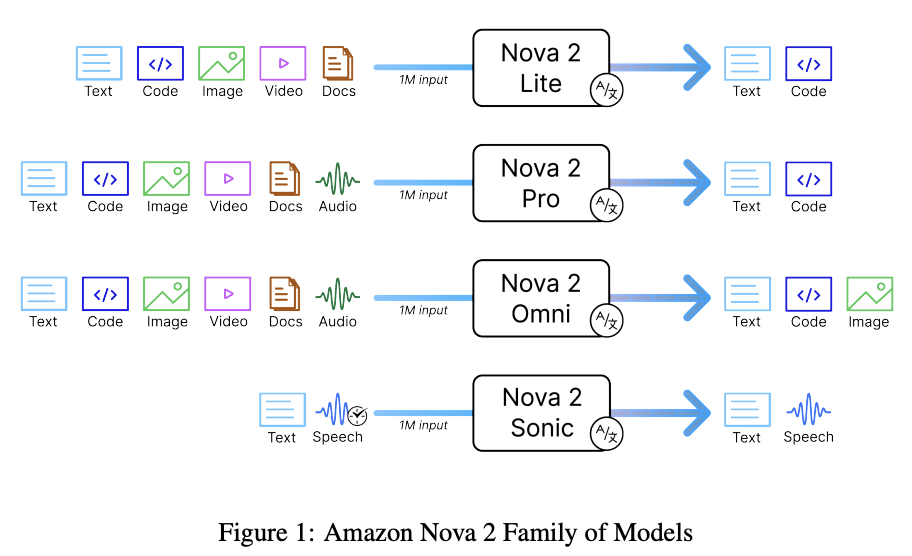

黎小为 | MEAD | SA

低延迟、高性价比推理模型，支持文本/图像/视频输入
最高智能级别，复杂工作负载，支持音频输入
首个统一多模态模型，支持图像生成与编辑
实时语音对话，支持10种语言
💡 建议策略："扬长避短，场景聚焦" - 赢得优势场景，通过 roadmap 持续补齐短板
Nova 2 Lite 在多步问题解决和 Agent 工作流上超越前代旗舰 Nova Premier
$0.0003 vs $0.0025 (input)
来源: Technical Report
| 模型 | Input (per 1K tokens) | Output (per 1K tokens) |
|---|---|---|
| Nova Lite v1 | $0.00006 | $0.00024 |
| Nova 2 Lite | $0.0003 5x | $0.0025 10.4x |
数据来源: AWS Bedrock Pricing (Global Cross-region, US East N. Virginia)
| 能力 | Nova 1 | Nova 2 Lite |
|---|---|---|
| 混合推理 (Extended Thinking) | ❌ 不支持 | ✅ 支持低/中/高三档 |
| 上下文窗口 | 300K tokens | 1M tokens |
| 输出长度 | 5K tokens | 65,536 tokens |
快速推理，适合简单任务
平衡推理深度和速度
深度推理，适合复杂问题
⚠️ 注意：推理过程是被隐藏的，显示为 "REDACTED"
数据来源: Nova 2 Technical Report
| 模型 | Telecom | Retail | Airline | BFCL v4 |
|---|---|---|---|---|
| Nova 2 Lite | 76.0% | 76.5% | 64.8% | 60.3% |
| GPT-5 Mini | 71.1% | 73.7% | 68.8% | 56.0% |
| Claude Haiku 4.5 | 54.7% | 69.1% | 54.0% | 61.8% |
| Gemini 2.5 Flash | 31.6% | 57.7% | 44.0% | 55.9% |
| 模型 | OCRBench-v2 | RealKIE-FCC | QVHighlights | ScreenSpot | LiveCodeBench |
|---|---|---|---|---|---|
| Nova 2 Lite | 56.1% | 62.1% | 77.2% | 83.3% | 71.0% |
| GPT-5 Mini | 55.4% | 53.1% | - | 24.8% | 83.8% |
| Claude Haiku 4.5 | 48.3% | 52.2% | - | - | 61.5% |
| Gemini 2.5 Flash | 58.2% | 50.1% | 52.4% | 27.2% | 69.5% |
💡 Agent 能力是 Nova 2 Lite 的核心优势，在电信和零售场景超越所有竞品
| 模型 | Input (per 1K tokens) | Output (per 1K tokens) |
|---|---|---|
| Nova Micro | $0.000035 | $0.00014 |
| Nova Lite v1 | $0.00006 | $0.00024 |
| Nova 2 Lite (Global) | $0.0003 | $0.0025 |
| Nova Pro v1 | $0.0008 | $0.0032 |
| Nova Premier | $0.0025 | $0.0125 |
数据来源: AWS Bedrock Pricing
2.5 折扣 (输入)
$0.000075 per 1K tokens
5 折扣
Input: $0.00015, Output: $0.00125
1.75x 价格
Input: $0.000525, Output: $0.004375
⚠️ Nova 2 Lite 单价比 Nova Lite v1 贵 5-10 倍，但能力大幅提升。需根据场景评估性价比。
测试详情: 查看完整测试结果
识别羽毛球视频中每个回合的起止时间和结束原因（5分钟长视频）
| 模型 | Video 1 片段数 | Video 2 片段数 | 平均耗时 | 准确性评级 |
|---|---|---|---|---|
| Gemini 2.5 Flash | 27 | 8 | ~25s | ⭐⭐⭐⭐⭐ |
| Gemini 2.5 Flash Lite | 44 | 120+ | ~9s | ⭐⭐ |
| Nova 2 Lite (标准) | 10 | 幻觉 | ~36s | ⭐⭐ |
| Nova 2 Lite (reasoning=low) | 17 | 20 | ~78s | ⭐⭐⭐ |
| Nova Pro | 27 | 28 | ~51s | ⭐⭐⭐ |
| Nova Lite V1 | 幻觉 (80+) | 幻觉 (80+) | ~57s | ❌ |
⚠️ 长视频时间线识别：不推荐使用 Nova 2 Lite | ✅ 短视频高光时刻：可以使用
测试详情: 查看完整测试结果
识别视频中用户的操作行为：关键词搜索、视频标题、创作者、观看时长
| 测试项 | Nova 2 Lite | Gemini 2.5 Flash | 对比结果 |
|---|---|---|---|
| 关键词搜索识别 | 准确 ✅ | 准确 ✅ | 效果相当 |
| 视频标题验证 | 准确 ✅ | 准确 ✅ | 效果相当 |
| 创作者验证 | 准确 ✅ | 准确 ✅ | 效果相当 |
| 观看时长判断 | 更准确 ✅ | 准确 ✅ | Nova 2 Lite 部分结果更好 |
✅ 内容审核场景：Nova 2 Lite 表现优秀，与 Gemini 2.5 Flash 效果相当甚至更好
测试详情: 查看完整测试结果
多语言图像文字识别（拉丁语系 vs 非拉丁语系）
| 模型 | 总 Tokens | 总耗时 | 平均 | 响应范围 |
|---|---|---|---|---|
| 🟣 Nova Pro | 47,383 | 69.6s | 1974 tokens / 2901ms | 942ms ~ 15102ms |
| 🔵 Nova Lite v1 | 50,114 | 68.2s | 2088 tokens / 2841ms | 822ms ~ 8591ms |
| 🟠 Nova 2 Lite | 44,425 | 36.7s | 1851 tokens / 1529ms | 842ms ~ 3331ms |
| 🟢 Gemini 2.5 Flash | 19,048 | 101.9s | 794 tokens / 4246ms | 2039ms ~ 8338ms |
| 语言类型 | Nova Lite/Pro v1 | Nova 2 Lite | Gemini 2.5 Flash |
|---|---|---|---|
| 拉丁语系（英文等） | 一般 | 大幅提升 ✅ | 优秀 ✅ |
| 非拉丁语系（中文、泰文等） | 较差 | 质的飞跃，但仍有幻觉 ⚠️ | 几乎无幻觉 ✅ |
✅ 拉丁语系：推荐使用 Nova 2 Lite（速度快） | ⚠️ 非拉丁语系：Gemini 更优（准确性高）
参考来源: AWS Nova 2 Multimodal Prompting Guide
| 参数 | 推荐值 | 说明 |
|---|---|---|
| temperature | 0 | 确保输出一致性 |
| topP | 1 | 不限制采样范围 |
| reasoning | ❌ 不使用 | 时间线任务不需要推理 |
Please localize the moment that the event "{event_description}"
happens in the video. Answer with the starting and ending time
of the event in seconds, such as [[72, 82]].
If the event happen multiple times, list all of them,
such as [[40, 50], [72, 82]].
| 参数 | 推荐值 | 说明 |
|---|---|---|
| temperature | 0.7 (默认) | 保持默认值 |
| topP | 0.9 (默认) | 保持默认值 |
| reasoning | ❌ 不使用 | OCR 不需要推理 |
## Instructions Extract all information from this page using only Markdown formatting. Retain the original layout and structure including lists, tables, charts and math formulae. ## Rules 1. For math formulae, always use LaTeX syntax. 2. Describe images using only text. 3. NEVER use HTML image tags in the output. 4. Always wrap the entire output in ``` tags.
| 参数 | 推荐值 | 说明 |
|---|---|---|
| temperature | 0 | 确保输出一致性 |
| topP | 1 | 不限制采样范围 |
| reasoning | ❌ 不使用 | 分类任务不需要推理 |
What is the most appropriate category for this video?
Select your answer from the options provided:
{class1}
{class2}
{...}
Example:
What is the most appropriate category for this video?
Select your answer from the options provided:
Arts
Technology
Sports
Education